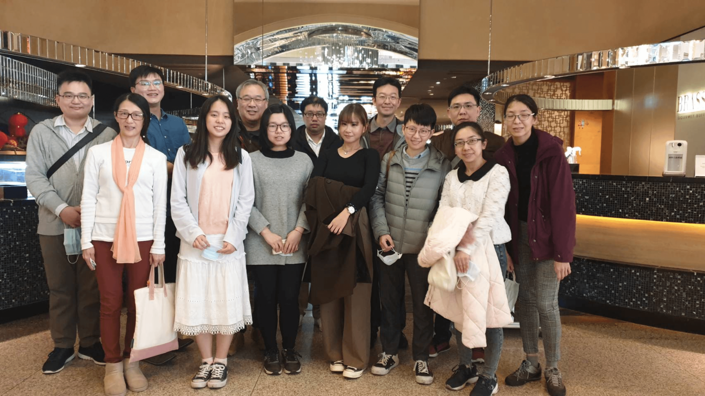

|

|
|
Members:
PhD Student:
Master Student:
Undergraduate: |
| ALUMNI | ||
| Ph.D. Students | ||
| 5 | 研究生姓名: | 徐振瑋 |
| 研究生英文姓名: | Jhen-Wei Syu | |
| 學號: | D1401701 | |
| 論文題目: | 陰道鞭毛蟲鐵壓力相關之微小蛋白體 | |
| 論文英文題目: | Iron stress-related microproteome in Trichomonas vaginalis | |
| 現職: | ||
| 5 | 研究生姓名: | 鄭尉弘 |
| 研究生英文姓名: | Wei-Hung Cheng | |
| 學號: | D9901204 | |
| 論文題目: | 陰道鞭毛蟲在缺鐵環境下之存活機制研究 | |
| 論文英文題目: | The survival mechanisms of Trichomonas vaginalis upon iron deficiency | |
| 現職: | 國立成功大學 醫學院 寄生蟲學科 助理教授 | |
| 4 | 研究生姓名: | 方怡凱 |
| 研究生英文姓名: | Yi Kai Fang | |
| 學號: | D9701204 | |
| 論文題目: | 利用多體學方法鑑定人類鞭毛蟲氫化體之蛋白質體 | |
| 論文英文題目: | Characterization of Human Trichomonads Hydrogenosome Proteomes by Multi-omics Approach | |
| 現職: | 博士後研究 (Charles University, Czech) | |
| 3 | 研究生姓名: | 黃國洋 |
| 研究生英文姓名: | Kuo Yang Huang | |
| 學號: | D9801201 | |
| 論文題目: | 陰道鞭毛蟲於葡萄糖限制模式下，誘導代謝重組與自體吞噬作用之調控機制 | |
| 論文英文題目: | Metabolic reprogramming and regulation of autophagy in Trichomonas vaginalis induced by glucose restriction | |
| 現職: | 國防醫學院 病理暨寄生蟲研究所 教授 | |
| 2 | 研究生姓名: | 黄柏榕 (國立清華大學 生物資訊與結構生物研究所 呂平江教授共同指導) |
| 研究生英文姓名: | Po-Jung Huang | |
| 學號: | D9580821 | |
| 論文題目: | 高通量小RNA定序分析平台之建立及其應用 | |
| 論文英文題目: | Establishment and Applications of Small RNA High-throughput Sequencing Analysis Platform | |
| 現職:: | 長庚大學 醫學院 生物醫學系 副教授 | |
|
1 |
研究生姓名: | 林威辰 |
| 研究生英文姓名: | Nike Wei-Chen Lin | |
| 學號: | D9401205 | |
| 論文題目: | 陰道鞭毛蟲微小核醣核酸之發現與功能解析 | |
| 論文英文題目: | Discovery and functional characterization of microRNA in Trichomonas vaginalis | |
| 現職:: | 國立成功大學 醫學院 寄生蟲學科 教授 | |
| Master Students | ||
| 20 | 研究生姓名: | 羅竑崴 |
| 研究生英文姓名: | Wayne Luo | |
| 學號: | M1101202 | |
| 論文題目: | 陰道鞭毛蟲病毒亞種在陰道鞭毛蟲中非均質分布 | |
| 論文英文題目 : | Heterogeneous Distribution of Trichomonas vaginalis virus Subspecies in T. vaginalis Isolates | |
| 19 | 研究生姓名: | 董蘊萲 |
| 研究生英文姓名: | Yu-Hsuan Tung | |
| 學號: | M0501224 | |
| 論文題目: | 陰道鞭毛蟲受病毒感染影響的研究 | |
| 論文英文題目 : | Studies on the impacts of virus infection in Trichomonas vaginalis | |
| 18 | 研究生姓名: | 蔡智宇 |
| 研究生英文姓名: | Chih-Yu Tsai | |
| 學號: | M0401218 | |
| 論文題目: | 利用質體表現陰道鞭毛蟲乳酸去氫酶之研究 | |
| 論文英文題目: | In-vitro Expression of Trichomonas vaginalis Lactate Dehydrogenase | |
| 17 | 研究生姓名: | 梁善道 |
| 研究生英文姓名: | Saidou Nyang | |
| 學號: | M0313003 | |
| 論文題目: | 探討陰道鞭毛蟲微小核醣核酸對抗藥性所扮演之角色 | |
| 論文英文題目: | The role of microRNAs in drug resistance in the protist Trichomonas vaginalis | |
| 16 | 研究生姓名: | 陳瑞旻 |
| 研究生英文姓名: | Ruei-Min Chen | |
| 學號: | M0001215 | |
| 論文題目: | 解析陰道鞭毛蟲與嗜中性白血球交互作用之外泌性蛋白質體 | |
| 論文英文題目: | The excretory/secretory proteome of Trichomonas vaginalis induced by neutrophil | |
| 15 | 研究生姓名: | 徐若玹 |
| 研究生英文姓名: | Jo-Hsuan Hsu | |
| 學號: | M0101201 | |
| 論文題目: | 探討PTPA在葡萄糖限制培養的陰道鞭毛蟲中的角色 | |
| 論文英文題目: | The role of phosphotyrosyl phosphatase activator in glucose restricted Trichomonas vaginalis | |
| 14 | 研究生姓名: | 藍珮慈 |
| 研究生英文姓名: | Pei-Chi Lan | |
| 學號: | M9801230 | |
| 論文題目: | 探討以低溫誘導陰道鞭毛蟲壽命延長之現象 | |
| 論文英文題目: | Life span extension induced by temperature reduction in Trichomonas vaginalis | |
| 13 | 研究生姓名: | 陳詩潔 |
| 研究生英文姓名: | Shih-Chieh Chen | |
| 學號: | M9801201 | |
| 論文題目: | 探討微小核糖核酸於卡路里限制誘導陰道鞭毛蟲生命週期延長所扮演的角色 | |
| 論文英文題目: | The role of microRNA in lifespan extension induced by calorie restriction in Trichomonas vaginalis | |
| 12 | 研究生姓名: | 鄭尉弘 |
| 研究生英文姓名: | Wei-Hung Cheng | |
| 學號: | M98 | |
| 論文題目: | 探討在卡路里限制下之陰道鞭毛蟲第一型酪蛋白激酶所扮演的角色 | |
| 論文英文題目: | Role of Casein Kinase 1 in Calorie Restricted Trichomonas vaginalis | |
| 11 | 研究生姓名: | 陳玉純 |
| 研究生英文姓名: | Yu-Chuen Chen | |
| 學號: | M9601212 | |
| 論文題目: | 探討以卡路里限制誘導陰道鞭毛蟲壽命延長之現象 | |
| 論文英文題目: | Lifespan extension induced by caloric restriction in Trichomonas vaginalis | |
| 10 | 研究生姓名: | 張志豪 |
| 研究生英文姓名: | Chih-Hao Chang | |
| 學號: | M9601213 | |
| 論文題目: | 利用蛋白質體學技術探討膀胱移形性細胞癌病人尿液中蛋白質表現的差異 | |
| 論文英文題目: | Differantial Urinary Protein Expression Profiling of Bladder Transitional Cell Carcinoma Patients | |
| 9 | 研究生姓名: | 王儷霖 |
| 研究生英文姓名: | Li-Ling Wang | |
| 學號: | M9501227 | |
| 論文題目: | 探討陰道鞭毛蟲蛋白激酶調控延長壽命的機轉 | |
| 論文英文題目: | Regulation of longevity in Trichomonas vaginalis by protein kinases | |
| 8 | 研究生姓名: | 林佳蓉 |
| 研究生英文姓名: | Chia-jung Lin | |
| 學號: | M9401225 | |
| 論文題目: | 探討陰道鞭毛蟲 ADF (actin-depolymerizing factor)/Cofilin 在纖維連接蛋白黏附作用之調控機轉 | |
| 論文英文題目: | Regulation of Fibronectin-Mediated Adherence through ADF (actin-depolymerizing factor)/ Cofilin in Trichomonas vaginalis | |
| 7 | 研究生姓名: | 曾詩涵 |
| 研究生英文姓名: | Shr-Han Tzeng | |
| 學號: | M9401203 | |
| 論文題目: | 探討陰道鞭毛蟲ADP核糖基化因子與貼附的關係 | |
| 論文英文題目: | The role of ADP-ribosylation factor on fibronectin mediated adherence in Trichomonas vaginalis | |
| 6 | 研究生姓名: | 黃馨儀 |
| 研究生英文姓名: | HSIN-YI Hain-Yi Huang | |
| 學號: | M9301218 | |
| 論文題目: | 陰道鞭毛蟲中細胞週期調控因子cdc25的選殖及特性分析 | |
| 論文英文題目: | Cloning, sequencing and characterization of a cell cycle regulator,cdc25 in Trichomonas vaginalis | |
| 5 | 研究生姓名: | 方怡凱 |
| 研究生英文姓名: | I-Kai Fang | |
| 學號: | M9201206 | |
| 論文題目: | 利用比較蛋白質體學分析陰道鞭毛蟲對低溫環境之反應 | |
| 論文英文題目: | Comparative proteomics analysis of cold stress response in Trichomonas vaginalis | |
| 4 | 研究生姓名: | 黃忠勝 |
| 研究生英文姓名: | Chung-Sheng Huang | |
| 學號: | M9101220 | |
| 論文題目: | 陰道鞭毛滴蟲 cyclin B 和 CDC2-relate kinase 的選殖及特性分析 | |
| 論文英文題目: | Molecular characterization of cyclin B and CDC2-relate kinase in Trichomonas vaginalis | |
| 3 | 研究生姓名: | 鄭羽昕 |
| 研究生英文姓名: | Sara Yu- Hsin Cheng | |
| 學號: | M9101216 | |
| 論文題目: | 陰道鞭毛蟲中14-3-3 的選殖及特性分析 | |
| 論文英文題目: | Characterization of 14-3-3 proteins in Trichomonas vaginalis | |
| 2 | 研究生姓名: | 黃家豪 |
| 研究生英文姓名: | Chai-Hao Huang | |
| 學號: | M9001211 | |
| 論文題目: | 陰道鞭毛蟲 Casein Kinase 1 的選殖與分析 | |
| 論文英文題目: | Cloning and Characterization of Casein Kinase 1 | |
| 1 | 研究生姓名: | 黃景政 |
| 研究生英文姓名: | Ching-Cheng Huang | |
| 學號: | M9001205 | |
| 論文題目: | Metronidazole引發陰道鞭毛蟲細胞凋亡之研究 | |
| 論文英文題目: | Induction of apoptotic-like cell death in Trichomonas vaginalis by metronidazole | |
| 最高學歷: | Ph.D. Dept. of Molecular & Cellular Biology, Imperial College London, UK | |
| 現職: | Associate Prof. , Ohio State University, USA | |